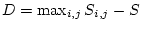

Broadly classifying, three different types of protein alignments categories are tackled by this command:
The command incorporates the functionality of the old MODELLER commands - (alignment.align(), alignment.align2d(), alignment.malign(), alignment.align3d(), and alignment.malign3d()). Some of the examples below illustrate the equivalent script files to replace the old alignment commands with alignment.salign().
In addition to these, this command has several new alignment features including profile-profile sequence alignments and a dendrogram based multiple sequence/structure alignment.
All pair-wise alignments make use of local or global dynamic programming. A switch from one to another can be effected by setting local_alignment to True or False. The dynamic programming can be carried out using affine gap penalties (as previously used in alignment.align()) or an environment dependent gap penalty function (as used in alignment.align2d()). The choice of gap penalty types can be regulated by switching the variable gap_function on or off. All arguments that associated to the alignment.align() and alignment.align2d() commands apply.
The description below is from the perspective of a multiple structure alignment. Much of it holds true for aligning sequence multiply except that the appropriate feature weights (see below for a detailed discussion on feature weights) must be utilized.
When alignment_type is set to tree this command performs a `tree' based multiple alignment. The `tree' alignment algorithm consists of a calculation of a dendrogram of the proteins in memory, followed by a progression of pairwise alignments of the growing sub-alignments. A sub-alignment is an alignment of proteins. The pairwise alignment of two sub-alignments is achieved by the 'align_lingp' or the 'align_vargp' routines depending on whether gap_function is set to False or True (arguments to the alignment.align() and alignment.align2d() commands apply).
The alignment of proteins within a sub-alignment does not change when the sub-alignment is aligned with another protein or sub-alignment. The pairwise alignment of sub-alignments is guided by the dendrogram. First, the most similar pair of proteins are aligned. Second, the next most similar pair of proteins are aligned, or the third protein is aligned with the sub-alignment of the first two, as indicated by the dendrogram. This greedy, progressive procedure requires steps to align all proteins, and each step requires a pairwise alignment of two sub-alignments.
If alignment_type is set to progressive, the multiple alignment follows only the last part of the `tree' alignment where, in alignments, all the structures/sequences are successively aligned to the first one on the list.
If a profile-profile alignment is to be performed, given two multiple sequence alignments, alignment_type should be set to pairwise.
Two multiple sequences alignments of proteins can be aligned using the profile-profile option of this command. The two multiple alignments need to be concatenated into one multiple alignment file. The end of the multiple alignment of the first protein sequences is demarcated by setting align_block to the numerical value of the number of sequences in the first multiple alignment.
align_what is set to 'PROFILE' to indicate that profiles will be matched. Since this is done for a pair of profiles, alignment_type is set to PAIRWISE. Profile comparisons can be done by comparing vectors of the variation of the 20 amino acids per position(PSSM) or by comparing the residue-residue substitution matrices implied at each alignment position of the multiple sequence alignment. This is effected by setting comparison_type to PSSM or MAT.
If the comparison type is PSSM the correlation coefficient of the position vectors is computed. If the comparison type is MAT, the user can choose to take the maximum of residue-residue substitution at the aligned positions, or the average of the correlation coefficient of the two matrices (set matrix_comparison to MAX, AVE or CC, respectively). In the PSSM comparisons, the correlation coefficient can be multiplied by the residue-residue substitution value by setting substitution = True. The smoothing of data with priors is regulated by setting smooth_prof_weight appropriately. When there are only the individual sequences in the multiple sequence alignment, the alignment reduces to a simple dynamic programming alignment (local or global) between the two sequences if substitution = True.
The alignment.salign() command uses position-position dissimilarity scores (except when similarity_flag is switched on), as opposed to similarity scores. This convention applies to all the features, including the residue-residue similarities read from the rr_file; however, if a residue type - residue type similarity matrix is read in, it is automatically converted into the distance matrix by . In addition, it is also scaled linearly such that the residue-residue dissimilarity scores range from 0 to 1 (to facilitate weighting this feature with other features).
For each pairwise alignment, the weight matrix has dimensions and
that correspond to the lengths of the sub-alignments to be aligned based on
the weight matrix . The dissimilarity score for aligning position with
position is calculated as
 ,
where the sum runs over all selected features , and
,
where the sum runs over all selected features , and  is a function that
may be used to correct the score for the presence of gaps within the
sub-alignments (see below). A feature is selected when its weight
is a function that
may be used to correct the score for the presence of gaps within the
sub-alignments (see below). A feature is selected when its weight
 (specified in feature_weights) is non-zero. The matrices
are normalized to have the mean of 0 and standard deviation of 1 when
normalize_pp_scores is True, but it is recommended not to use this
option for now (i.e., use feature_weights to scale the contributions of
the different features to the final ). The weights of 1 will weigh the
different features approximately evenly (the residue-residue dissimilarities
of feature 1 are scaled to a range from 0 to 1, the position differences of
feature 2 are in angstroms, the fractional solvent accessibility scores of
feature 3 and the secondary structure scores of feature 4 range from 0 to 2,
and the DRMS difference of feature 5 is expressed in angstroms).
(specified in feature_weights) is non-zero. The matrices
are normalized to have the mean of 0 and standard deviation of 1 when
normalize_pp_scores is True, but it is recommended not to use this
option for now (i.e., use feature_weights to scale the contributions of
the different features to the final ). The weights of 1 will weigh the
different features approximately evenly (the residue-residue dissimilarities
of feature 1 are scaled to a range from 0 to 1, the position differences of
feature 2 are in angstroms, the fractional solvent accessibility scores of
feature 3 and the secondary structure scores of feature 4 range from 0 to 2,
and the DRMS difference of feature 5 is expressed in angstroms).
Feature 1 is the residue type. is obtained from the residue type - residue type dissimilarity matrix, specified in the file rr_file. dissimiarity score for positions and in the two compared sub-alignments is the average dissimilarity score for a comparison of all residues in one sub-alignment with all residues in the other sub-alignment (note that gaps are ignored here). Should only feature weight 1 be non-zero, the user has an option of considering residue-residue similarity scores instead of distances scores by setting similarity_flag to True.
Feature 2 is the inter-molecular distance for a pair of residues (unless
align3d_trf is True, see alignment.align3d()). Only one atom per
residue is of course selected, as specified by fit_atoms (e.g., ,
although we should also allow for in the future, which requires an
intervention for Gly). This `position' feature is complicated because it
depends on the relative orientation of the structures corresponding to the two
compared alignments.  is the Euclidean distance between the
compared positions and in the two compared sub-alignments that are
already optimally aligned and superposed based on their coordinates alone.
This optimal alignment is obtained by an iterative procedure as follows
(the same as in alignment.align3d()). The average structures for both
sub-alignments are calculated for all sub-alignment positions with at least
one defined selected atom. This calculation is straightforward because the
structures within the two sub-alignments are already superposed with each
other (see below). Then, the distance matrix for dynamic programming by
'align_lingp' is calculated as the matrix of Euclidean distances between
the two averages. The dynamic programming results into a new alignment,
dependent also on the gap initiation and extension penalties
gap_penalties_3d (a reasonable setting is 0 3).
gap_penalties_3d[1] is a gap creation penalty (usually 0), and
gap_penalties_3d[2] is a gap extension penalty, say 3. When the gap
initiation penalty is 0, pairs of positions are identified as equivalent
when they have their selected atoms at most 2 times gap_penalties_3d[2]
angstroms apart in the current superposition, as described for the
alignment.align3d() command. The new alignment is then used to generate
the new superposition of the two averages, and the iteration of the distance
matrix calculation, alignment and superposition is repeated until there are
no changes in the number of equivalent positions and in the rotation matrix
relating the two averages.
is the Euclidean distance between the
compared positions and in the two compared sub-alignments that are
already optimally aligned and superposed based on their coordinates alone.
This optimal alignment is obtained by an iterative procedure as follows
(the same as in alignment.align3d()). The average structures for both
sub-alignments are calculated for all sub-alignment positions with at least
one defined selected atom. This calculation is straightforward because the
structures within the two sub-alignments are already superposed with each
other (see below). Then, the distance matrix for dynamic programming by
'align_lingp' is calculated as the matrix of Euclidean distances between
the two averages. The dynamic programming results into a new alignment,
dependent also on the gap initiation and extension penalties
gap_penalties_3d (a reasonable setting is 0 3).
gap_penalties_3d[1] is a gap creation penalty (usually 0), and
gap_penalties_3d[2] is a gap extension penalty, say 3. When the gap
initiation penalty is 0, pairs of positions are identified as equivalent
when they have their selected atoms at most 2 times gap_penalties_3d[2]
angstroms apart in the current superposition, as described for the
alignment.align3d() command. The new alignment is then used to generate
the new superposition of the two averages, and the iteration of the distance
matrix calculation, alignment and superposition is repeated until there are
no changes in the number of equivalent positions and in the rotation matrix
relating the two averages.
The values of both improve_alignment and fit are used in the calculation of the position feature. That is, the initial alignment and the orientation of the coordinates can be selected not to change at all during the calculation of the inter-molecular distance matrix.
When the calculation of the inter-molecular distance matrix is finished, all the structures in the second sub-alignment are rotated and translated following the optimal rotation and translation of the second average on the first average. These superpositions prepare the individual structures for the next of the stages of the progressive multiple alignment, and also orient all the structures for writing out to 'alignment[i].code_fit.pdb' atom files if write_fit = True. If fit_pdbnam = False, the PDB filenames in the output alignment file will not have the '_fit.pdb' extensions. Thus, feature 2 needs to be selected by feature_weight[2] if you wish to write out the structures superposed according to the tree-following procedure; also, fit_on_first must be False, otherwise the structures are written out superposed on the first structure according to the final alignment (see also below).
The alignment produced within the routine that calculates does not generally correspond to the alignment calculated based on . Therefore, the multiply superposed structures are not necessarily superposed based on the final multiple alignment produced by alignment.salign(). If you wish such a superposition, you can use alignment.malign3d() with fit = False and write_fit = True (the meaning of fit is different between alignment.salign() and alignment.malign3d()).
Unless the position feature is selected, the initial alignment does not matter. If the position feature is selected, a good starting alignment is a multiple sequence alignment, obtained either by alignment.malign() or by alignment.salign() used without the position feature (the initial alignment can also be prepared using the position feature). If the position feature is used, each pair of structures needs to have at least 3 aligned residues at all points during the alignment.
There are several possibilities as to the final orientation of the input coordinates. If fit_on_first is True, all the coordinate sets are superposed on the first structure, using the final multi-feature multiple alignment. If fit_on_first is False, and position feature was used, and fit was True, the coordinates will be superposed in the progressive manner guided by the tree, by the routine that calculates the inter-molecular distance matrices; this superposition is based only on the positions of the selected atoms (feature 2), not on other features such as residue type, secondary, structure, etc. If improve_alignment is False, it does not make much sense to have fit = True (use fit_on_first = True).
Feature 3 is the fractional sidechain accessibility. The pair-wise residue-residue dissimilarity is calculated by classifying residues into the buried (%), semi-exposed, and exposed classes (%). The dissimilarity is 0 for equal classes, 1 for neighboring classes and 2 for the buried-exposed match. The position.position dissimilarity is the average residue-residue dissimilarity for comparing all residues from one group to all residues in the other group (gaps are ignored).
Feature 4 is the secondary structure type, distinguishing between helix, strand, and other. The pair-wise residue-residue dissimilarity is 0 for equal classes, 1 for `helix' or `strand' matched to `other', and 2 for `helix' matched to 'strand'. The position.position dissimilarity is the average residue-residue dissimilarity for comparing all residues from one group to all residues in the other group (gaps are ignored).
Feature 5 is the local conformation. A pair-wise residue-residue score is DRMSD between the selected atoms (fit_atoms) from the segments of 5 residues centered on the two matched residues. The position.position dissimilarity is the average residue-residue dissimilarity for comparing all residues from one group to all residues in the other group (gaps are ignored).
Feature 6 is a user specified feature for which a external matrix (in MODELLER matrix format; see the substitution matrices in the modlib directory for examples) has to be specified using input_weights_file. The user can input either a similarity matrix (weights_type = SIMILAR) or a distance matrix (weights_type = DISTANCE).
The gap correction function is
,
where and are the number of proteins in the two sub-alignments,
is the number of gap-residue pairs, and is the number of
gap-gap pairs when comparing protein positions from one sub-alignment with
protein position from the other sub-alignment, is gap_residue_score
and  is gap_gap_score. The smaller (even negative) is
gap_gap_score, and the larger is gap_residue_score, the more will
the gaps be aligned with gaps.
is gap_gap_score. The smaller (even negative) is
gap_gap_score, and the larger is gap_residue_score, the more will
the gaps be aligned with gaps.
Argument output can contain the following values:
The user can choose to have certain alignment positions "fixed" by offsetting the appropriate matrix entries. This is achieved by setting fix_offset to True. Below the given pair of sequence blocks in the input alignment file, a new pseudo sequence is introduced with the align code ._fix_pos. The residues of this pseudo sequence are either blank spaces or integer values from 0 (blanks are assigned 0 by default) through 4. The placement of the non-zero integers is done so that they are below the positions that are to be offset, in an effort to ensure that the alignment implied by that position is restrained. The extent to which this alignment position is restrained depends on the offset that the numerical value (0-4) corresponds to. This can also be specified by the user by specifying the matrix offset values with fix_offsets.
Suboptimal alignments. The weight matrix can be offset at random, many times over, to generate several `sub-optimal' alignments. The number of sub-optimal alignments to be output can be specified with n_subopt. Though the matrix positions at which these offsets cannot be controlled, the user can choose by how much the matrix will be offset (subopt_offset).
In addition, if you enable verbose logging with log.verbose(), there will be more output in the 'log' file, such as the dendrogram. The dendrogram can also be written out in a separate file by specifying the file name to dendrogram_file.
If write_fit is True, the fitted atom files are written out in their fitted orientations. For this and other options below, also read the text above.
If write_weights is True, the dynamic programming weight matrix is written out into the file specified by output_weights_file.
If current_directory is True, the output _pdb.fit files will be written to the current directory. Otherwise, the output will be in the directory with the original files.
If write_whole_pdb is True, the whole PDB files are written out; otherwise only the parts corresponding to the aligned sequences are output.
If fit is False, the initial superposition is not changed. This is useful when all the structures have to be compared with a given alignment as is, without changing their relative orientation.
If fit_on_first is True, the structures are fit to the first structure according to the final alignment before they are written out.
If improve_alignment is False, the initial alignment is not changed, though the structures may still be superimposed if fit = True. This is useful when all the structures have to be superimposed with the initial alignment.
[blank]